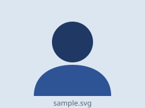

이미지
<img src="../assets/sample.svg" alt="샘플 프로필 이미지" />

| 속성 | 설명 |
|---|---|
| src | 이미지 파일 경로. 상대 경로 규칙이 그대로 적용됩니다 |
| alt | 이미지를 못 볼 때 대신 읽히는 글자. 생략하면 안 됩니다 |
src 를 일부러 틀리면

알아두기
본 교재는 실습 파일을 가볍게 유지하려고 사진 대신 회색 상자(div)를 썼습니다.
(실습 1-4의 .photo, 실습 2-5의 .card-image)
실제 사진을 넣으려면 그 div 를 img 로 바꾸고
width:100%; height:100%; object-fit:cover; 를 주면 됩니다.
링크
| 형태 | 동작 |
|---|---|
href="page.html" | 같은 폴더의 다른 페이지 |
href="https://..." | 외부 사이트 |
href="#id" | 같은 페이지 안에서 그 id 로 스크롤 |
target="_blank" | 새 탭에서 열기 (rel="noopener" 를 함께) |
알아두기
a 태그는 인라인 요소라 기본적으로 파란 글씨에 밑줄이 붙습니다.
실습 1-6에서
text-decoration: none 으로 밑줄을 없애고
hover 효과를 주는 것이 바로 이 태그입니다.
자주 나는 오류
이미지가 깨진 아이콘으로 보이면 src 경로가 틀린 것입니다.
F12 → Network 탭에서 404 를 확인하세요.
여기가 #bottom 입니다. 위의 세 번째 링크로 여기까지 왔습니다.